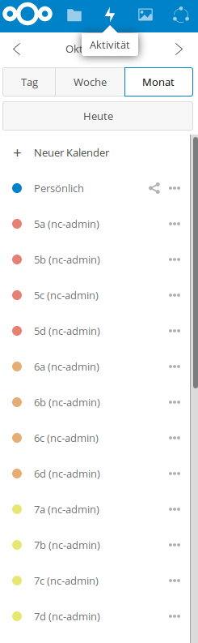
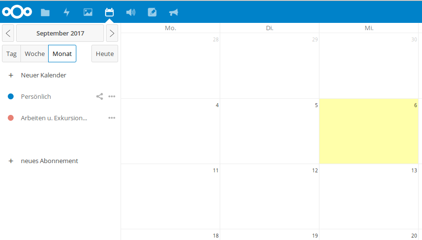
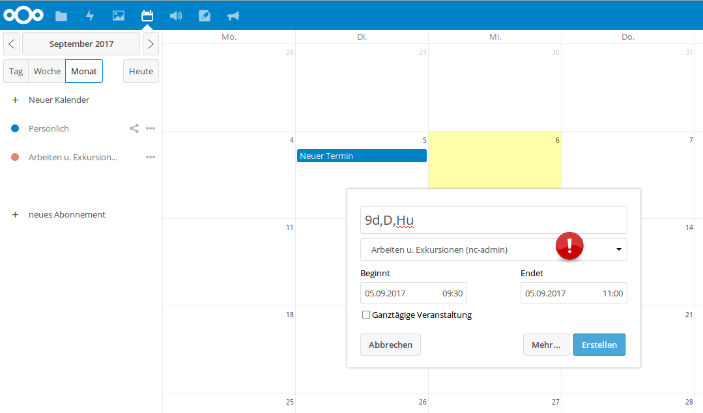
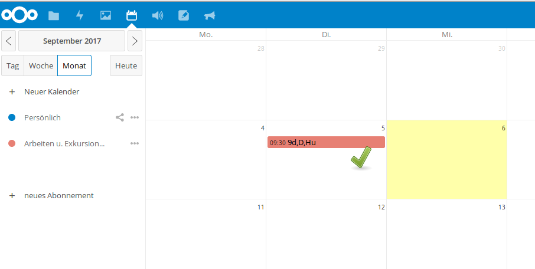

Kalender¶
Eine Klassenarbeit oder eine Exkursion eintragen¶
Seit Schuljahresbeginn (2017/18) existieren für die Lehrer mehrere Kalender in der Cloud, in die jeder seine Klassenarbeiten und Exkursionen eintragen kann.
Für jede Klasse bzw. Klassenstufe wurde ein eigener Kalender erstellt! Damit die Übersichtlichkeit gewahrt bleibt, kann man alle Kalender, die man nicht zu sehen wünscht, mit einem Klick auf den farbigen Punkt links neben dem Kalendernamen, ausblenden. Übrig bleiben in der Terminübersicht rechts dann nur die farbig markierten Kalender.
Der Vorteil liegt auf der Hand: Man kann in Ruhe zu Hause seine Klassenarbeit planen und eintragen, da die Kalender rund um die Uhr auch von zu Hause (oder von anderswo) aus erreichbar sind. Man kann diese Kalender bequem in ein Email-Programm mit Kalenderfunktion einbinden (Thunderbird, Outlook, Apple-Variante) oder auch in eine entsprechende App einbinden, um die Kalender auch auf mobilen Geräten verfügbar zu machen.
Wichtig
Allerdings sollten Sie folgende Punkte bedenken: Der Netzwerkberater stellt die Funktionalität bereit und ist nicht für fehlerhafte oder nicht korrekt angelegte Einträge verantwortlich. Vergewissern Sie sich daher bitte immer,a) ob der Inhalt des Eintrags korrekt ist, b) der Eintrag in dem richtigen Kalender (“Arbeiten u. Exkursionen”) angelegt wurde und c), dass der Eintrag gespeichtert wurde. Bedenken Sie weiterhin, dass Sie die Einträge der Kollegen verändern und löschen können. Bitte vermeiden Sie dies unbedingt.
Vorgehen:
- Klicken Sie Hauptfenster in der Leiste der Apps auf das Kalendersymbol
2. Sie werden zur Kalender-App weitergeleitet. Die meisten Platz auf dem Bildschirm nimmt die Kalenderübersicht ein. Ein Kästchen pro Tag. Links oben sehen sie den angezeigten Monat und das Jahr. Klicken Sie auf die Pfeile links oder rechts neben Anzeige von Monat und Jahr, um zum gewünschten Termin zu gelangen. Klicken Sie auf die Schaltflächen “Tag”, “Woche”, “Monat” oder “Heute”, um die Ansicht zu ändern. Die Übersicht rechts verändert sich entsprechend. Weiterhin sehen Sie links alle Kalender die sie angelegt haben, oder die mit Ihnen geteilt wurden. Das sind wahrscheinlich nur zwei. Ein blau markierter mit dem Namen “Persönlich” für ihre eigenen Termine und einen rot markierten darunter mit dem Namen “Arbeiten und Exkursionen”.
3. Um eine Klassenarbeit oder eine Exkursion in diesem Kalender einzutragen, doppelklicken Sie auf das gewünschte Datum in der Übersicht. Es öffnet sich ein Fenster, in das sie bitte den Namen des Eintrags eintragen (“Titel der Veranstaltung”) sowie die Dauer (die Uhrzeit).
Wichtig
Um die Übersichtlichkeit zu erhöhen und um für ein einheitliches Erscheinungsbild zu sorgen halten Sie sich bitte an folgende Schreibweise: Klasse,Fach,Lehrerkürzel. Zum Beispiel: 9d,D,Hu
Wichtig
Achten Sie darauf, dass Sie den richtigen Kalender ausgewählt haben. Klicken Sie auf das Dropdown-Menu und wählen Sie den Kalender derjenigen Klasse, in den Sie eine Klassenarbeit oder eine Exkursion eintragen möchten, z. B. “6a”.
Sind alle Angaben korrekt und der richtige Kalender ausgewählt, klicken Sie auf die Schaltfläche “Erstellen” unten rechts.
Wenn alles geklappt hat, erscheint der Termin in der Kalenderübersicht in roter Farbe! Der Termin ist nun für alle anderen Kollegen sichtbar.
Aufgaben¶
- Gehen Sie zur Kalender-App!
- Lassen Sie sich nur die Kalender anzeigen, in deren Klassen Sie unterrichten, sowie den Kalender “Fortbildung”.
- Erstellen Sie einen Termin im Kalender “Fortbildung” in der Woche vom 4.12. bis 10.12., der 45 Minuten dauert und folgendem Schema folgt: Klasse,Fach,Kürzel (welche Klasse Sie wählen, ist egal)
- Überprüfen Sie, ob die anderen Teilnehmer Ihren Termin sehen können und ob diese Ihren Termin angezeigt bekommen.